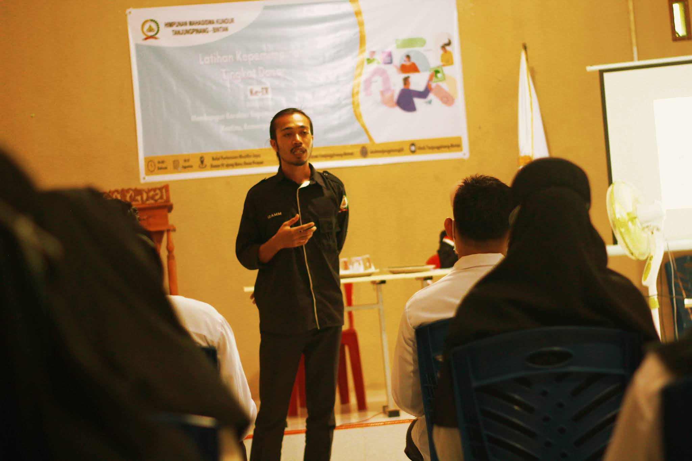

HUT HIMK Tanjungpinang-Bintan ke IX
Tepat pada tanggal 23 September 2021, Himpunan Mahasiswa Kundur kembali memperingati HUT yang ke-IX. Dalam memperingati HUT Himpunan Mahasiswa Kundur Tanjungpinang-Bintan, beberapa perlombaan se-Pulau Kundur diadakan:
- Lomba berbalas pantun (SD/Sederajat)
- Lomba puisi (SMP/Sederajat)
- Lomba film pendek (SMA/Sederajat) dengan tema "pendidikan dibalut pandemi"
Para pemenang lomba tersebut akan diumumkan pada malam puncak serta menampilkan karya mereka.
Pada tanggal 23 September 2021, diadakan malam syukuran di Islamic Center Tanjungbatu. Meskipun di masa pandemi, HIMK tetap bisa bersilaturahmi dengan memfasilitasi media via Zoom meeting.
Selanjutnya, pada tanggal 25 September 2021, dilaksanakan kegiatan malam puncak di Gedung Serba Guna Kundur Barat, dengan berbagai penampilan khusus serta pengumuman dan pembagian hadiah bagi para pemenang lomba.
Kegiatan ini menargetkan 115 peserta, yang dihadiri oleh Bapak Camat Kundur Barat, Bapak Kepala Desa Sei. Sebesi, demisioner-demisioner, seluruh anggota Himpunan Mahasiswa Kundur, dan para peserta lomba yang didampingi oleh guru sekolah se-Pulau Kundur.
"Pada HUT Himpunan Mahasiswa Kundur Tanjungpinang-Bintan tahun ini, kami mengangkat tema 'Bersimpuh Petuah Bergaung Marwah' yang berarti duduk bersimpuh (duduk yang beretika menurut adat Melayu) dan mendengarkan nasihat dari pendahulu sebagai bentuk inspirasi dan pedoman hidup untuk melangkah ke depan, serta merupakan sesuatu yang menjadi pegangan guna menjaga kehormatan dan martabat organisasi," ujar Rina, Selaku Ketua Panitia.
"Pandemi tidak menjadi tantangan bagi kami dalam menjalankan kegiatan dan peringatan organisasi kedaerahan ini. Tujuan organisasi kedaerahan ini bukan hanya sekedar kegiatan-kegiatan, melainkan upaya pembenahan daerah khususnya di Kundur ini," ucap Kakanda Izam Jumreni, Selaku Ketua Umum Himpunan Mahasiswa Kundur Tanjungpinang-Bintan pada kata sambutannya.
Acara puncak HUT HIMK ke-9 ditutup dengan pemotongan tumpeng bersama Bapak Camat Kundur Barat, Bapak Kepala Desa Sei. Sebesi, demisioner, dan Ketua Umum Himpunan Mahasiswa Kundur Tanjungpinang-Bintan.